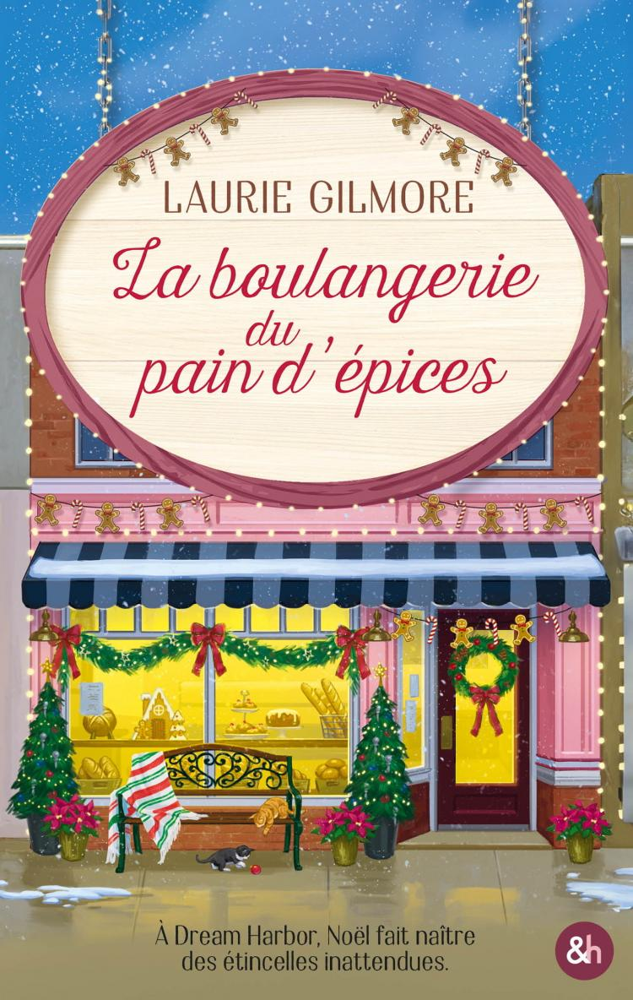

Romance
La Boulangerie du pain d'épices
HarperCollins - Dream Harbor, tome 5
Paru le
Résumé
À Dream Harbor, Annie prépare le mariage de ses amis. Mais les festivités la rapprochent de Mac, son premier amour. Entre souvenirs et préparatifs de Noël, leurs retrouvailles réveillent des sentiments qu'elle pensait avoir laissés derrière elle.